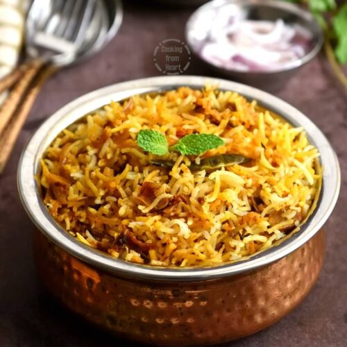

Biryani
Description
This authentic Hyderabad Biryani is a classic indian rice dish.
Although not easy to prepare, it is well worth it in the end. Providing
loads of flavor through many spices and long cooking with bone in meat,
its a hard dish to beat. Give it your best go and enjoy!

Ingredients
- basmati rice
- chicken thigh
- onion
- greek yogurt
- ginger garlic paste
- garam masala
- biryani masala
- lemon juice
- green chillies
- coriander
- mint
- saffron
- ghee
Steps
- Brown and fry the onions in the ghee,
separate and save the onions and oil for later.
- Add seasonings, yogurt, chillies, ginger, garlic,
and lemon to a bowl. Taste for flavor and add chicken.
- Wash rice and soak, heating up water with spices tasting for flavor.
Boil rapidly then cook rice till 75% cooked (non-mushy).
- Once cooked, add rice, chicken, onions, and spices into
pot. Cover with foil and a tight lid, baking for 30 to 40 min at 200C.
Enjoy!